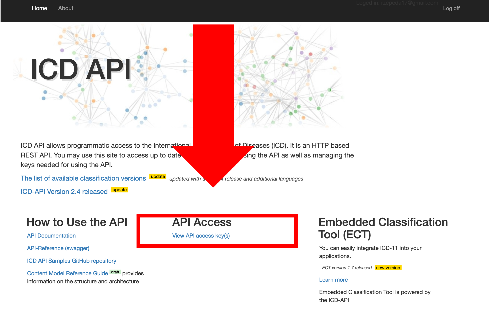

Access the World Health Organization’s (WHO) International Classification of Diseases (ICD) API. This allows you to use ICD-10 and ICD-11 codes, encode text directly into ICD-11, search for diseases in ICD-10, and detect underlying causes of death using the DORIS system.
Installation
You can install the development version of WHOicd using the remotes package:
#install.packages("remotes")
remotes::install_github("RodrigoZepeda/WHOicd")Setup
For the examples we’ll assume you already have a CLIENT_ID and CLIENT_SECRET for the WHO API as obtained in the Obtaining your token section.
To interact with the API you’ll need to continuously create a token using the get_token function:
Note These tokens last for 1 hour and once the hour passes you’ll need to generate a new token. Don’t worry, you’ll receive a notification if you try to use it and its already expired.
ICD-10 examples
Obtaining information on codes and blocks
Bottom-up search
Search one value
You can obtain all the information from a certain ICD-10 code using the icd10_code_info function:
icd10_code_info(token, "M20")
#> code
#> "M20"
#> code_title
#> "Acquired deformities of fingers and toes"
#> block_1
#> "M20-M25"
#> block_title_1
#> "Other joint disorders"
#> block
#> "M00-M25"
#> block_title
#> "Arthropathies"
#> chapter
#> "XIII"
#> chapter_title
#> "Diseases of the musculoskeletal system and connective tissue"Same information is available for blocks
icd10_block_info(token, "M00-M25")
#> block
#> "M00-M25"
#> block_title
#> "Arthropathies"
#> chapter
#> "XIII"
#> chapter_title
#> "Diseases of the musculoskeletal system and connective tissue"and for chapters:
icd10_chapter_info(token, chapter = "VI")
#> chapter chapter_title
#> "VI" "Diseases of the nervous system"Search one vector
Vectorized versions of those functions exist which allow the user to input a vector of codes and obtain a data.frame:
icd10_code_info_vectorized(token, codes = c("E10", "M21", "C00.1"))
#> [1] "Searching code: E10"
#> [1] "Searching code: M21"
#> [1] "Searching code: C00.1"
#> search_value code code_title block
#> 1 E10 E10 Type 1 diabetes mellitus E10-E14
#> 2 M21 M21 Other acquired deformities of limbs M00-M25
#> 3 C00.1 C00 Malignant neoplasm of lip C00-C97
#> block_title chapter
#> 1 Diabetes mellitus IV
#> 2 Arthropathies XIII
#> 3 Malignant neoplasms II
#> chapter_title block_1
#> 1 Endocrine, nutritional and metabolic diseases <NA>
#> 2 Diseases of the musculoskeletal system and connective tissue M20-M25
#> 3 Neoplasms C00-C75
#> block_title_1
#> 1 <NA>
#> 2 Other joint disorders
#> 3 Malignant neoplasms, stated or presumed to be primary, of specified sites, except of lymphoid, haematopoietic and related tissue
#> code_1 code_title_1 block_2
#> 1 <NA> <NA> <NA>
#> 2 <NA> <NA> <NA>
#> 3 C00.1 Malignant neoplasm: External lower lip C00-C14
#> block_title_2
#> 1 <NA>
#> 2 <NA>
#> 3 Malignant neoplasms of lip, oral cavity and pharynxAdditionally for blocks and chapters the following are available:
Search from a data.frame (tidyverse)
Using the tidy functions you can search in a data.frame and create new columns in the same data.frame.
As an example, consider the following which adds columns to chapters and blocks:
codes_df <- data.frame(
Sex = c("M", "F", "F"),
icd10 = c("E14.1", "C80.0", "F14")
)
codes_df |>
icd10_code_info_tidy("icd10", token)
#> [1] "Searching code: E14.1"
#> [1] "Searching code: C80.0"
#> [1] "Searching code: F14"
#> Sex icd10 code_1 code_title_1 code
#> 1 M E14.1 E14.1 Unspecified diabetes mellitus with ketoacidosis E14
#> 2 F C80.0 C80.0 Malignant neoplasm, primary site unknown, so stated C80
#> 3 F F14 <NA> <NA> F14
#> code_title block
#> 1 Unspecified diabetes mellitus E10-E14
#> 2 Malignant neoplasm, without specification of site C00-C97
#> 3 Mental and behavioural disorders due to use of cocaine F10-F19
#> block_title chapter
#> 1 Diabetes mellitus IV
#> 2 Malignant neoplasms II
#> 3 Mental and behavioural disorders due to psychoactive substance use V
#> chapter_title block_1
#> 1 Endocrine, nutritional and metabolic diseases <NA>
#> 2 Neoplasms C76-C80
#> 3 Mental and behavioural disorders <NA>
#> block_title_1
#> 1 <NA>
#> 2 Malignant neoplasms of ill-defined, secondary and unspecified sites
#> 3 <NA>Additionally for blocks and chapters the following are available:
# For blocks
codes_df <- data.frame(
Sex = c("M", "F", "F"),
icd10_blocks = c("C76-C80", "E10-E14", "F10-F19")
)
codes_df |>
icd10_block_info_tidy("icd10_blocks", token, dry_run = TRUE)
#> Warning in .icd10_search_vectorized(searchvec = searchvec, searchfun =
#> searchfun, : No value of `searchvec` was found
# For chapters
codes_df <- data.frame(
Sex = c("M", "F", "F"),
icd10_chapters = c("II", "IV", "III")
)
codes_df |>
icd10_chapter_info_tidy("icd10_chapters", token, dry_run = TRUE)
#> Warning in .icd10_search_vectorized(searchvec = searchvec, searchfun =
#> searchfun, : No value of `searchvec` was foundTop-down search
Given a chapter you can also list all the blocks in a chapter
icd10_blocks(token, chapter = "III")
#> codes title
#> 1 D50-D53 Nutritional anaemias
#> 2 D55-D59 Haemolytic anaemias
#> 3 D60-D64 Aplastic and other anaemias
#> 4 D65-D69 Coagulation defects, purpura and other haemorrhagic conditions
#> 5 D70-D77 Other diseases of blood and blood-forming organs
#> 6 D80-D89 Certain disorders involving the immune mechanismAs well as all of the chapters in a block:
icd10_codes(token, block = "D55-D59")
#> codes title
#> 1 D55 Anaemia due to enzyme disorders
#> 2 D56 Thalassaemia
#> 3 D57 Sickle-cell disorders
#> 4 D58 Other hereditary haemolytic anaemias
#> 5 D59 Acquired haemolytic anaemiaThe same command allows you to search inside a code:
icd10_codes(token, block = "D55")
#> codes title
#> 1 D55.0 Anaemia due to glucose-6-phosphate dehydrogenase [G6PD] deficiency
#> 2 D55.1 Anaemia due to other disorders of glutathione metabolism
#> 3 D55.2 Anaemia due to disorders of glycolytic enzymes
#> 4 D55.3 Anaemia due to disorders of nucleotide metabolism
#> 5 D55.8 Other anaemias due to enzyme disorders
#> 6 D55.9 Anaemia due to enzyme disorder, unspecifiedSearch for code in releases
Not all codes are available across releases. For example, the C80.0 code was not in the 2008 release of the ICD-10. Hence if you are using that release you will not find it:
icd10_code_info(token, code = "C80.0", release = 2008)
#> Warning in value[[3L]](cond): ICD-10 code possibly not found
#> [1] NAHowever you can use the icd10_code_search_release to search for a release containing that code:
icd10_code_search_release(token, code = "C80.0")
#> [1] "2019" "2016" "2010"and use one of those releases instead:
icd10_code_info(token, code = "C80.0", release = 2016)
#> code_1
#> "C80.0"
#> code_title_1
#> "Malignant neoplasm, primary site unknown, so stated"
#> code
#> "C80"
#> code_title
#> "Malignant neoplasm, without specification of site"
#> block_1
#> "C76-C80"
#> block_title_1
#> "Malignant neoplasms of ill-defined, secondary and unspecified sites"
#> block
#> "C00-C97"
#> block_title
#> "Malignant neoplasms"
#> chapter
#> "II"
#> chapter_title
#> "Neoplasms"Additional information on releases
The icd10_releases function lists all available ICD-10 releases
icd10_releases(token)
#> [1] "2019" "2016" "2010" "2008"The default is 2019. You can change it with the release parameter across all functions.
To obtain the complete information on a certain release you can use the icd10_release_info function:
icd10_release_info(token, release = 2016)
#> context
#> "http://id.who.int/icd/contexts/contextForTopLevel.json"
#> id
#> "http://id.who.int/icd/release/10/2016"
#> title.language
#> "en"
#> title.value
#> "International Statistical Classification of Diseases and Related Health Problems 10th Revision (ICD-10) Version for 2016"
#> releaseDate
#> "2016-11-01"
#> browserUrl
#> "http://apps.who.int/classifications/icd10/browse/2016/en"Obtaining your token
Go to the WHO ICD API website at https://icd.who.int/icdapi and click on Register inside the API Access section:

Fill out your information and verify your email.

Once your email is verified go to the Login page. Enter your email and password:

Read and accept the terms and conditions for the API
Under API Access click on View API access key(s)
 Your client id and secret will be required by the WHOicd library. Copy them, they are the equivalent to a user and password for this API. You’ll need them to interact with the WHO ICD. Don’t share them!!
Support
This is not an official product of the WHO. However we are happy to provide support if you raise an issue.